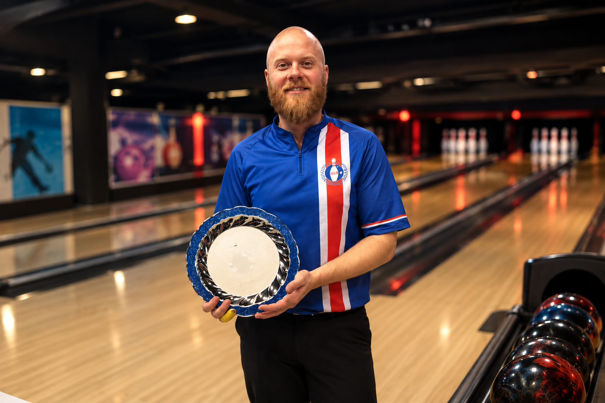

UM KEILUSJOPPUNA
Áratuga reynsla.
Ástríða fyrir keilu.
Keilusjoppan, áður Hudson Proshop, er fjölskyldufyrirtæki sem byggir á áratuga reynslu, fagmennsku og sannri ástríðu fyrir keilu.

REYNSLA & ÞEKKING
Keila hefur verið
hluti af lífinu frá
þriggja ára aldri.
Hjartað í Keilusjoppunni er Hafþór Harðarson, einn reynslumesti og sigursælasti keilari landsins. Hafþór hefur verið í keilu frá því hann var aðeins þriggja ára gamall og hefur í gegnum árin öðlast mikla reynslu, bæði sem keilari og þjálfari.
Hafþór er margfaldur Íslandsmeistari og hefur unnið fjölda titla í gegnum keiluferil sinn. Hann hefur einnig komið að þjálfun landsliða og miðlað þekkingu sinni og reynslu áfram til annarra keilara.
Þessi reynsla er grunnurinn að þjónustu Keilusjoppunnar. Hafþór sér um faglega borun keilukúlna og ráðgjöf við val á kúlum og öðrum búnaði með það að markmiði að hver keilari fái búnað sem hentar hans leik, reynslu og markmiðum.
REYNSLA SEM SKIPTIR MÁLI
einstaklinga
ársins*
hófst
þekkingu
*Hafþór var útnefndur karlkeilari ársins í áttunda sinn árið 2022.
FJÖLSKYLDUFYRIRTÆKI
Byggt af keilufólki.
Fyrir keilufólk.
Keilusjoppan er fjölskyldufyrirtæki þar sem hver og einn leggur sitt af mörkum. Sameiginlega markmiðið er einfalt: að veita keilurum á Íslandi góða, persónulega þjónustu og aðgang að vönduðum keilubúnaði.
Hjá okkur snýst þetta um meira en að selja keiluvörur. Við viljum hjálpa hverjum keilara að finna búnað sem hentar honum – hvort sem þú ert að kaupa þína fyrstu keilukúlu eða leitar að búnaði sem getur hjálpað þér að taka næsta skref í leiknum.
KEILUSJOPPAN
Finndu rétta búnaðinn
fyrir þinn leik.
Ertu ekki viss hvaða kúla eða búnaður hentar þér? Hafðu samband og fáðu ráðgjöf byggða á áratuga reynslu.
HAFA SAMBAND →